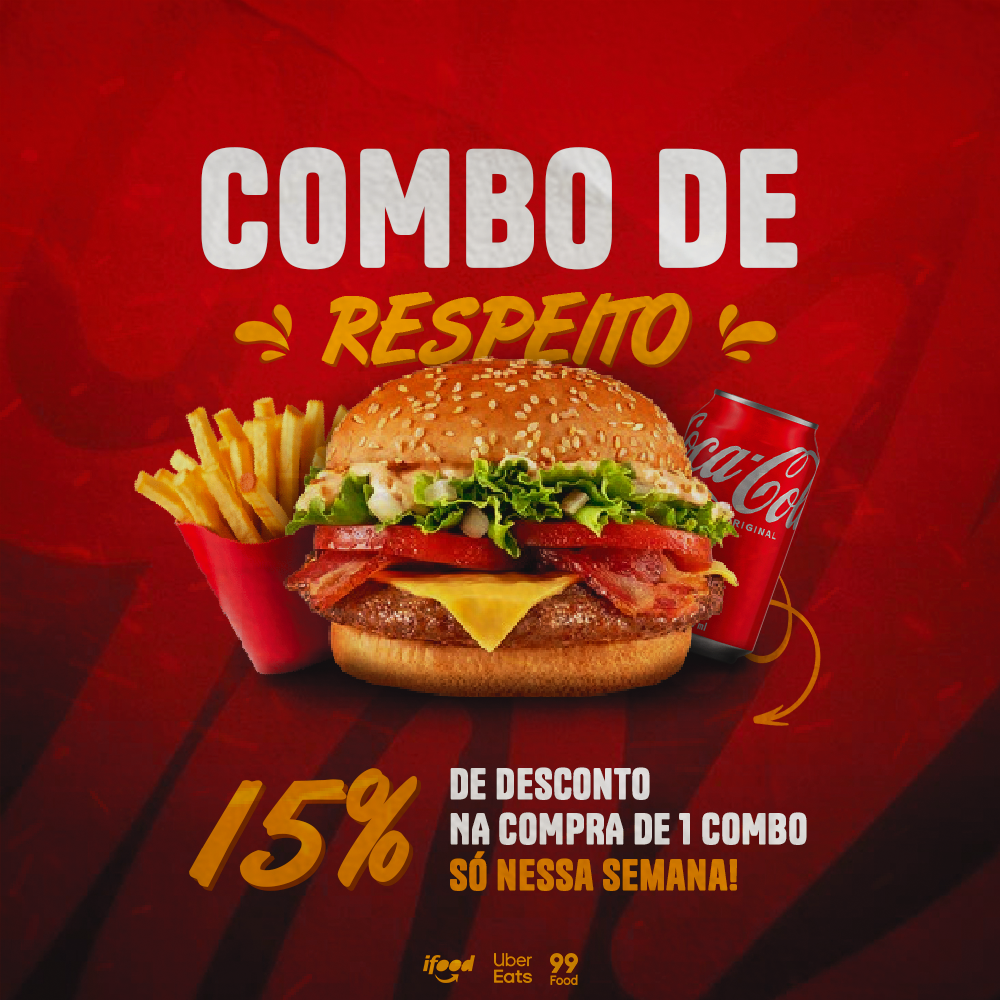

Designer gráfico para fast-food em Portugal – atraia mais clientes com design profissional
Se tem um negócio de fast-food em Portugal e quer aumentar as vendas, o design gráfico pode fazer toda a diferença. Um visual atrativo e profissional é essencial para chamar a atenção dos clientes, destacar promoções e fortalecer a identidade da sua marca.

Ofereço serviços de design gráfico especializados para fast-food em Portugal, criando conteúdos visuais que ajudam o seu negócio a destacar-se da concorrência. Desde menus até publicações para redes sociais, tudo é desenvolvido com foco em resultados.
Design para redes sociais de fast-food
As redes sociais são uma das principais formas de atrair clientes hoje em dia. Um bom design pode transformar completamente a forma como o seu negócio é visto online.
Crio conteúdos visuais para redes sociais adaptados ao setor de fast-food, incluindo:
- Promoções de combos
- Destaque de produtos (hambúrgueres, pizzas, bebidas, etc.)
- Campanhas sazonais
- Publicações para delivery e take-away
- Anúncios para atrair mais clientes
Cada design é pensado para despertar o apetite e incentivar a compra, utilizando cores, tipografia e elementos visuais estratégicos.
Menus e materiais promocionais
Além das redes sociais, também desenvolvo menus e materiais promocionais para o seu negócio.
Um menu bem estruturado e visualmente apelativo facilita a escolha do cliente e aumenta as vendas. Crio designs claros, modernos e alinhados com a identidade da sua marca.
Também posso desenvolver:
- Flyers promocionais
- Cartazes
- Banners
- Materiais para campanhas especiais
Cartões de visita para o seu negócio
Mesmo num mundo digital, os cartões de visita continuam a ser importantes. Um cartão bem desenhado transmite profissionalismo e ajuda a reforçar a imagem da sua marca.
Crio cartões de visita personalizados para negócios de fast-food, com um design moderno e alinhado com o seu estilo visual.
Vetorização de logótipos
Se o seu logótipo está em baixa qualidade ou precisa de ser melhorado, ofereço o serviço de vetorização.
Transformo o seu logótipo num ficheiro vetorial de alta qualidade, ideal para impressão e utilização em diferentes formatos. Isso permite que a sua marca tenha sempre uma apresentação profissional, independentemente do tamanho ou aplicação.
Design adaptado ao mercado em Portugal
Cada país tem as suas particularidades, e Portugal não é exceção. Os consumidores valorizam um design limpo, apelativo e direto.
Por isso, todos os projetos são adaptados ao público português, utilizando uma abordagem visual que funciona no mercado local. O objetivo é criar designs que realmente gerem resultados para o seu negócio.
Porque investir em design gráfico para fast-food?
Num mercado competitivo, a imagem do seu negócio pode ser o fator decisivo para conquistar clientes.
- Aumentar a visibilidade nas redes sociais
- Destacar promoções e produtos
- Transmitir profissionalismo
- Atrair mais clientes
- Aumentar as vendas
Entre em contacto
Se procura um designer gráfico para fast-food em Portugal, estou disponível para ajudar. Entre em contacto para solicitar um orçamento e descobrir como posso melhorar a imagem do seu negócio.
Trabalho com rapidez, profissionalismo e foco nos resultados, ajudando o seu fast-food a destacar-se e crescer no mercado.
Se o seu negócio atua noutros setores, pode também conhecer os meus serviços como designer gráfico para redes sociais ou explorar soluções para o setor alimentar como design gráfico para açaíterias, com conteúdos atrativos para redes sociais e promoções. Desenvolvo projetos personalizados para diferentes áreas, sempre com foco em resultados.
Um design bem pensado para fast-food em Portugal não se resume apenas à estética, mas também à comunicação eficaz com o cliente. Cada elemento visual é desenvolvido para transmitir qualidade, despertar interesse e facilitar a decisão de compra. Ao investir em conteúdos profissionais e consistentes, o seu negócio ganha mais credibilidade no mercado e aumenta as hipóteses de fidelizar clientes, tornando-se uma referência no setor.